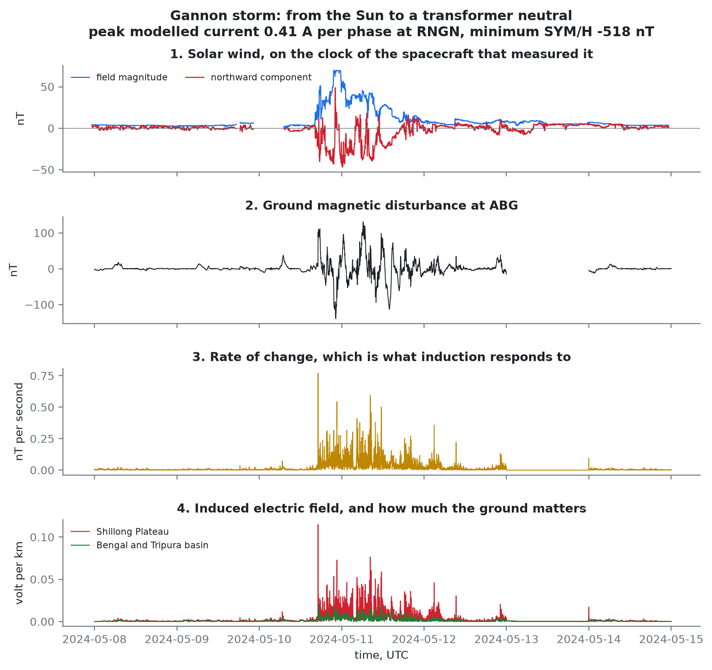
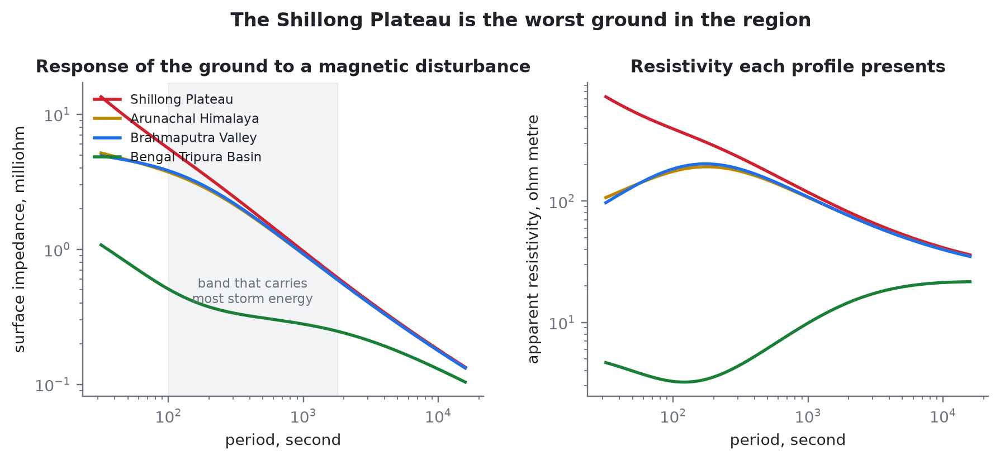
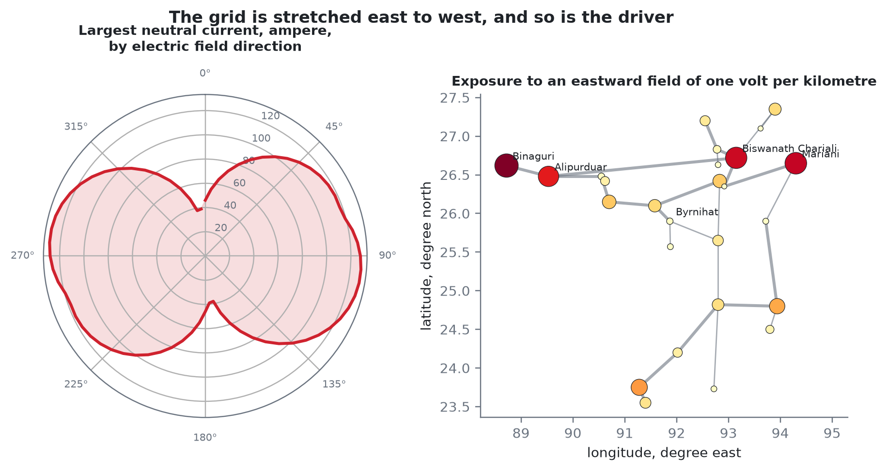

Forecasting geomagnetically induced current in the North East Indian transmission grid, and deciding what to do about it. Every number on this page is produced by the code in this repository, running on real solar wind data from NASA OMNI and real ground magnetometer data from INTERMAGNET.
The forecast at each point uses only solar wind that had already arrived at the first Lagrange point by that time. The observed line is drawn for comparison and was never available to the model.
A disturbed period is a run of minutes above the level, separated from the next run by at least two hours. Warning is counted from the last alarm that was already standing when the period began, plus the forecast horizon itself. Periods with no standing alarm are counted as missed and are shown here rather than dropped.
Sites are chosen against a hypothetical extreme event, not an observed storm. The right hand column is what a ranking that scored each site on its own would have said, which is a different answer.



In scope. The 400 kV and 220 kV transmission levels of the North East Region, quasi direct current effects of a geomagnetic storm, the chain from solar wind at the first Lagrange point through to transformer consequence, and operator decision support.
Out of scope. Distribution networks below 220 kV, three dimensional magnetotelluric inversion, induction in pipelines and railways, direct control actuation, and security of the data path.
Known limitations. There is no public record of measured transformer neutral current in India, so the consequence model rests on physics and on published international measurements rather than on Indian ground truth. The network model is representative and not exact, because real network parameters are restricted. Shillong and Tirunelveli observatory data are held by the Indian Institute of Geomagnetism and a data request is pending, so the model is trained on Alibag and Hyderabad.